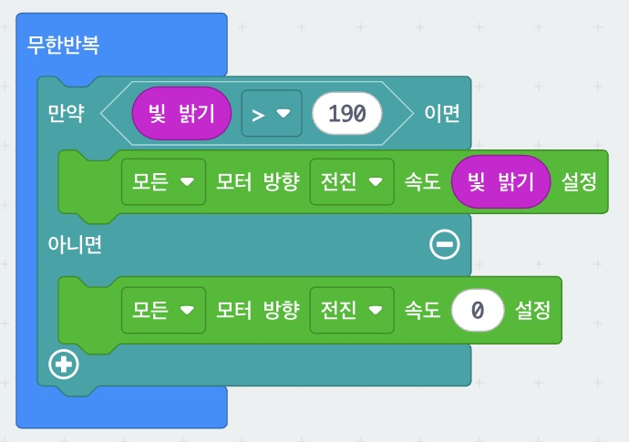

8. 빛을 따라오는 마퀸
손전등을 비추면 따라오고, 어두우면 멈추는 로봇입니다. 센서를 따로 달지 않아도 됩니다. micro:bit의 5×5 LED 화면이 빛 센서 역할을 하기 때문입니다. 모터 속도 칸에 숫자 대신 빛 밝기 블록을 끼워 넣어 "밝을수록 빠르게" 만드는 것이 핵심입니다.
먼저 볼까요? 손전등을 따라오는 마퀸
빛 센서는 어디에 있을까?
micro:bit의 5×5 LED는 빛을 내기도 하고 빛을 받아들이기도 합니다. 주변 밝기를 0(어둠) ~ 255(아주 밝음) 값으로 알려 줍니다.
- 블록: 입력 → 빛 밝기 (확장 설치 필요 없음)
- 손전등을 화면에 비추면 값이 커지고, 손으로 가리면 작아져요.
- 워밍업: 숫자 출력 빛 밝기로 교실 밝기를 먼저 재 보세요!
준비물 (모둠당)
- micro:bit + 마퀸(Maqueen) 본체, AA 건전지 3개
- micro USB 케이블, 인터넷이 되는 PC
- 손전등 또는 스마트폰 플래시
- 확장: DFRobot_MaqueenPlus_v20 (추가 방법은 7번 페이지 참고)
블록 코드
블록을 끌어 옮기거나 마우스 휠로 확대해서 볼 수 있어요. MakeCode에서 열기를 누르면 확장이 추가된 상태로 편집기에 열리니, 그대로 다운로드해 마퀸에 넣을 수 있어요.

코드 주소: https://makecode.microbit.org/S66493-09121-68110-39479
만드는 순서
- 만약 ~ 이면 / 아니면 무한반복 안에 만약 블록을 넣고 (+) 버튼을 눌러 아니면을 추가합니다.
- 밝으면 빛의 세기만큼 전진 조건에 빛 밝기 > 190. 안에는 모든 모터 방향 전진 속도 [빛 밝기]. 속도 칸의 숫자를 빼고 보라색 빛 밝기 블록을 끼워 넣는 것이 포인트! 값이 200이면 속도 200, 250이면 속도 250 → 밝을수록 빨라요.
- 어두우면 정지 아니면에는 모든 모터 방향 전진 속도 0. 190 이하일 때 실행됩니다.
- 테스트 다운로드 → 마퀸 전원 ON → 조명을 조금 어둡게 한 뒤 손전등을 micro:bit 화면에 비추며 앞으로 이동. 빛을 끄면 멈추면 성공!
블록 찾는 곳 — 논리 → 만약~이면/아니면, 비교(>) | 입력 → 빛 밝기 | MaqueenPlusV2&V3 → 모터 블록
사용법
| 밝다 (값이 큼) | 빠르게 전진 |
|---|---|
| 조금 밝다 | 천천히 전진 |
| 어둡다 (190 이하) | 정지 |
막힐 때
빛을 꺼도 계속 달려요.
교실이 밝아 값이 늘 190을 넘는 것입니다. 기준값을 220~230으로 올리세요.
비춰도 안 움직여요.
기준값을 150 정도로 낮추세요. 손전등을 화면(LED 쪽)에 비추고 있나요?
너무 느려요.
속도 칸에 "빛 밝기 × 1.5"처럼 곱하기 블록을 써 보세요.
도전 과제
빛을 피하는 마퀸> 를 < 로 바꾸면? 어두울 때만 달려요 (바퀴벌레 로봇!)
밝기 표시달리면서 "숫자 출력 빛 밝기"로 밝기를 보여 주기.
경광등 합치기7번의 RGB LED 코드를 넣어 빛을 따라가는 경찰차로!
방향 바꾸기왼쪽·오른쪽 모터 속도를 다르게 주면 빛을 향해 휘어져 갈 수 있을까?